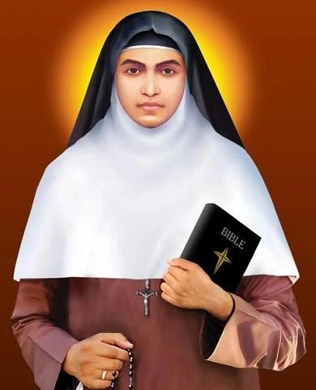
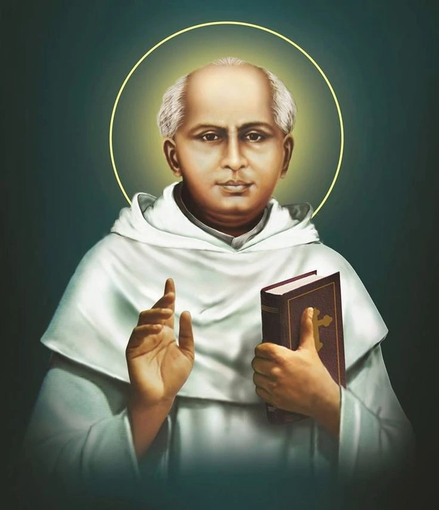
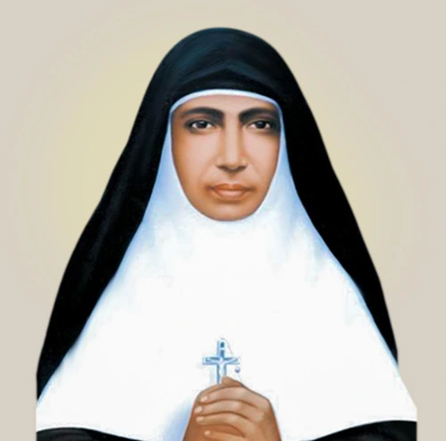
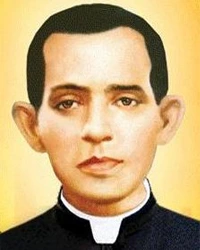
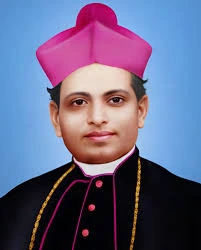
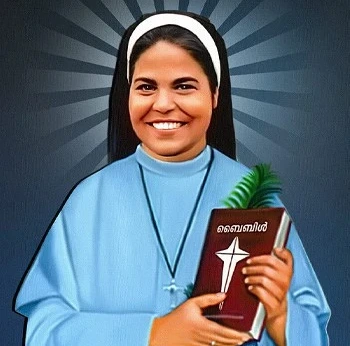
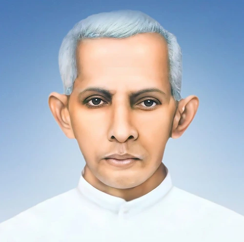
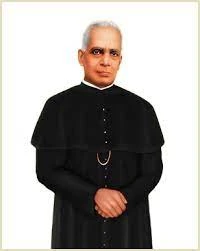

St. Alphonsa of the Immaculate Conception (1910–1946)

St. Alphonsa , the first woman saint of India and the first canonized saint from the Syro-Malabar Catholic Church , stands as a shining example of holiness, purity, and patient suffering. She was born as Anna Muttathupadathu on August 19, 1910 , in Kudamaloor , near Kottayam in Kerala, to a deeply devout Christian family.
From her earliest years, Anna was drawn to a life of prayer and sacrifice. She experienced many trials, including the loss of her mother just 40 days after her birth. Raised by her aunt, she grew up with a strong desire to dedicate herself completely to Jesus. To avoid marriage and remain faithful to her vow of virginity, she once deliberately burned her foot , an act that left her with lifelong scars but also showed her total commitment to God's call.
In 1927, she joined the Franciscan Clarist Congregation (FCC) and took the name Sister Alphonsa of the Immaculate Conception . Her religious life, though filled with love and prayer, was also marked by constant illness and suffering —including fever, accidents, and physical weakness. Despite this, she remained serene and joyful, offering all her pain for the love of Christ and for the salvation of souls. Her words reflected her deep spirituality: "I consider a day without suffering as a day lost."
Her quiet life of hidden sanctity deeply moved all who met her. Those around her witnessed her patience, humility, and forgiveness even amidst great pain. St. Alphonsa's faith transformed her suffering into a source of grace and inspiration for others.
She was called to her heavenly reward on July 28, 1946 , at the age of 35. After her death, many miracles were reported through her intercession, and devotion to her spread quickly across Kerala and beyond.
Recognizing her heroic virtues, Pope John Paul II beatified her on February 8, 1986 , at Kottayam, and later, Pope Benedict XVI canonized her on October 12, 2008 , at St. Peter's Square in Rome.
Today, St. Alphonsa is venerated as the Patron Saint of Suffering and the Youth . Her feast is celebrated on July 28 every year. She remains a powerful example of holiness through humility, purity, and endurance , reminding us that true sanctity lies in loving God wholeheartedly, even in the midst of pain and trials.
Saint Kuriakose Elias Chavara (1805–1871)

Saint Kuriakose Elias Chavara was one of the greatest saints and reformers in the history of the Syro-Malabar Catholic Church. Born on February 10, 1805 , in Kainakary , a small village in Kerala, India, he was the sixth child of devout parents, Iko Chavara and Mariyam Thoppil . From his childhood, he showed a deep love for prayer and service to God.
He joined the seminary at a young age and was ordained a priest in 1829 . Deeply moved by the needs of the Church and society, Fr. Chavara dedicated his life to spiritual renewal, education, and social upliftment. Along with two other priests, he founded the Carmelites of Mary Immaculate (CMI) in 1831 — the first indigenous religious congregation for men in India. This congregation played a major role in strengthening the Church through education, preaching, and pastoral service.
Fr. Chavara believed that education was a divine instrument for the betterment of society. He established the first Catholic Sanskrit school in Kerala and introduced the visionary idea of "a school with every church." Because of this mission, he is often called the Father of Literacy in Kerala.
He also founded the Congregation of the Mother of Carmel (CMC) in 1866 , the first religious congregation for women in India, encouraging women to lead lives of holiness, prayer, and service.
A man of deep spirituality, St. Chavara promoted family prayer and community life. He introduced the beautiful tradition of Evening Family Prayer , urging every family to "pray together and stay together." His writings and spiritual insights guided families toward love, peace, and holiness.
Beyond his work for the Church, St. Chavara was a true social reformer. He worked for the dignity of all people, supported the poor, and promoted equality and justice. His compassion and leadership helped transform Kerala into a land known for faith and education.
Saint Kuriakose Elias Chavara passed away on January 3, 1871 , leaving behind a shining legacy of holiness, education, and service. He was beatified in 1986 by Pope John Paul II and canonized as a saint by Pope Francis on November 23, 2014 .
Today, St. Chavara is venerated as a model priest, educator, and social reformer , who showed through his life that true holiness means serving God through love and service to others. His vision continues to inspire the Church, especially in India, to live in faith, unity, and compassion.
Saint Euphrasia Eluvathingal (1877–1952)

"The Praying Mother" of the Syro-Malabar Church
Saint Euphrasia Eluvathingal , also lovingly called "Evuprasiamma" , was a woman of deep prayer, humility, and unwavering faith. She was born on October 17, 1877 , in Kattur, Thrissur District, Kerala , into a devout Catholic family. Her parents, Anthony and Kunjethy Eluvathingal , raised her in strong Christian values, and from her childhood, she showed an extraordinary love for prayer and devotion to the Blessed Sacrament.
As a young girl, she desired to dedicate her entire life to God. At the age of 17, she joined the Congregation of the Mother of Carmel (CMC) — the first indigenous religious congregation for women in India, founded by Saint Kuriakose Elias Chavara . She made her final vows in 1900 , taking the name Sister Euphrasia of the Sacred Heart of Jesus .
Her life was marked by deep contemplation, love for the Eucharist, devotion to the Virgin Mary , and constant prayer for the Church and the world. She spent long hours before the Blessed Sacrament, interceding for others. Her spiritual directors and superiors often referred to her as a "living tabernacle of the Holy Spirit."
Sister Euphrasia served as the Mother Superior of St. Mary's Convent, Ollur, where she guided her fellow sisters with gentleness, compassion, and spiritual wisdom. Her humility and obedience inspired everyone around her. She was known for her ability to find joy in suffering and for her unwavering trust in God's will.
Though she lived a hidden life inside the convent walls, her holiness radiated far beyond them. Many who met her experienced peace, healing, and spiritual renewal. Her intercessory prayers brought blessings to countless people.
Saint Euphrasia passed away peacefully on August 29, 1952 , after a life wholly devoted to prayer and service. The Church recognized her sanctity, and she was beatified on December 3, 2006 , and canonized as a saint by Pope Francis on November 23, 2014 , alongside Saint Kuriakose Elias Chavara .
She is fondly remembered as the "Praying Mother" of the Congregation of the Mother of Carmel and the Syro-Malabar Church — a shining example of how a life of prayer, simplicity, and love can transform the world.
Blessed Mariam Thresia Chiramel (1876–1926)

A Pioneer of Family Apostolate and Service to the Needy
Blessed Mariam Thresia Chiramel was a visionary saint of the Syro-Malabar Church , renowned for her deep prayer life, mystical experiences, and dedication to serving the poor and strengthening family life. She was born on April 26, 1876 , in Puthenchira, Kerala , into a devout Catholic family. From childhood, she was known for her piety, compassion, and a strong desire to dedicate her life to God.
Despite her young age, Mariam Thresia felt a profound calling to serve the Church and society. She faced initial family resistance but persisted in following God's will. In 1914 , she founded the Congregation of the Holy Family , a religious community dedicated to the spiritual formation of families, education of children, and service to the poor and marginalized . Her work emphasized the importance of prayer, family values, and charitable service.
Blessed Mariam Thresia led a life marked by sacrifice, mystical union with God, and tireless service . She guided her sisters with love and spiritual wisdom, nurturing them to become instruments of God's mercy in society. Her life inspired countless people to live their faith actively through prayer, charity, and family apostolate.
She passed away on June 8, 1926 , after a life wholly devoted to God and service to humanity. Recognizing her heroic virtues, the Church beatified her on April 9, 2000 , and she is venerated as a model for family life, prayer, and service .
Legacy of Blessed Mariam Thresia:
- Founder of the Congregation of the Holy Family .
- Advocate for family apostolate, education, and service to the poor .
- Model of prayer, holiness, and selfless dedication .
Feast Day: June 8
Venerable Payyappilly Varghese Kathanar (1876–1929)

A Servant of God and Shepherd of Compassion
Venerable Payyappilly Varghese Kathanar was a devoted priest of the Syro-Malabar Catholic Church , known for his deep faith, humility, and service to the poor and suffering. He was born on August 8, 1876 , in Perumanoor, Kochi, Kerala , to Payyappilly Palakkappilly Lonan and Kunjumariam . From his early years, he showed a strong inclination toward prayer, charity, and a desire to serve God and others.
He was ordained a priest on December 21, 1907 , for the Archdiocese of Ernakulam , and served with exceptional dedication in various parishes. Fr. Varghese Kathanar was admired for his pastoral zeal , gentleness , and commitment to education and social welfare . He worked tirelessly for the spiritual and material upliftment of his people, emphasizing faith formation, family life, and community service.
One of his most enduring contributions was the founding of the Congregation of the Sisters of the Destitute (SD) in 1927 . The congregation was established to serve " the poorest of the poor, abandoned, and destitute ," reflecting his deep compassion and Christ-centered love. This congregation continues his mission today through hospitals, schools, orphanages, and social service centers across the world.
Fr. Payyappilly was known for his simplicity of life , spirit of prayer , and readiness to help anyone in need . During times of flood and famine, he opened church resources and even his own residence to provide food and shelter to the needy. His parishioners affectionately called him the "Priest of the Poor."
He passed away on October 5, 1929 , leaving behind a shining legacy of love, service, and holiness. His life continues to inspire priests, religious, and lay faithful to live a life of faith in action.
Recognizing his heroic virtues, the Holy See declared him "Venerable" on July 14, 2018 , marking an important step toward his canonization.
Venerable Fr. Thomas Kurialacherry (1873–1925)

A Pioneer of Catholic Education and Spiritual Renewal
Venerable Fr. Thomas Kurialacherry was a devoted priest of the Syro-Malabar Catholic Church , celebrated for his visionary leadership, pastoral zeal, and dedication to education and the formation of youth. He was born on March 16, 1873 , in Kochi, Kerala , into a devout Christian family. From an early age, he showed a deep love for God, prayer, and learning.
He was ordained a priest on December 21, 1898 , and served in various parishes where his deep faith and pastoral care made a profound impact. Fr. Kurialacherry believed that education and faith formation were inseparable , and he dedicated himself to establishing schools, catechetical centers, and institutions to nurture both the spiritual and intellectual growth of children and youth.
In 1911, he was appointed as the first Bishop of Changanacherry , where he worked tirelessly to organize and strengthen the Syro-Malabar Church. He emphasized missionary zeal, spiritual renewal, and pastoral care , encouraging priests, religious, and laity to serve the Church with dedication. He also promoted the involvement of women in education and social service, fostering the growth of religious congregations and charitable institutions.
Fr. Kurialacherry was known for his humility, simplicity, and deep compassion . He spent countless hours guiding priests, supporting families, and tending to the spiritual needs of his flock. His letters, sermons, and writings continue to inspire faithful Christians.
He passed away on June 2, 1925 , leaving behind a legacy of faith, education, and pastoral leadership. Recognizing his heroic virtues, the Holy See declared him Venerable , honoring his life of holiness and service to the Church.
Blessed Rani Maria (1954–1995)

A Martyr of Love and Justice
Blessed Rani Maria Vattalil was a courageous Indian nun who gave her life serving the poor and oppressed. She was born on March 29, 1954 , in Kerala, India , to a Christian family deeply rooted in faith. From a young age, she was drawn to prayer, service, and helping those in need.
She joined the Franciscan Clarist Congregation (FCC) and devoted herself to the service of marginalized communities, particularly in rural Madhya Pradesh. Rani Maria worked tirelessly to empower the poor, fight social injustice, and bring hope to those who were voiceless and oppressed.
Her bold efforts to uplift landless laborers and educate them about their rights, however, faced fierce opposition. On February 25, 1995 , she was tragically martyred while defending the rights of the poor. Her death became a powerful testimony of her unwavering faith, courage, and commitment to God's work on earth.
Rani Maria was beatified by Pope Benedict XVI on April 4, 2017 , recognizing her as a martyr of charity and justice . She is remembered for her extraordinary compassion, fearless advocacy, and the ultimate sacrifice she made in the service of the Lord.
Legacy of Blessed Rani Maria:
- A model of courage, charity, and social justice .
- Inspired generations to serve the poor and defend the marginalized.
- A living witness that faith and action can transform society .
Feast Day: February 25
Fr. Augustine Thevarparambil (Kunjachan) (1890–1973)

A Priest of the Poor and Advocate for the Dalits
Fr. Augustine Thevarparambil , fondly called "Kunjachan" (meaning "Little Father"), was a beloved Syro-Malabar priest known for his deep compassion, simplicity, and lifelong dedication to serving the marginalized. He was born in 1890 in Kerala, India , into a devout Christian family. From an early age, he felt a calling to serve God through the priesthood.
Ordained as a priest, Fr. Kunjachan dedicated his ministry to uplifting the Dalit communities in Kerala, who faced severe social discrimination. He worked tirelessly to provide education, spiritual guidance, and social support, helping them integrate fully into society and the Church. His love, humility, and approachability earned him the affectionate title of Kunjachan , as he became a spiritual father to countless families.
Fr. Augustine was known for his devotion to the Eucharist, simplicity of life, and unshakeable faith . He often walked long distances to reach remote villages, bringing the sacraments, teaching catechism, and advocating for justice. Through his ministry, he transformed lives, built faith communities, and inspired many to live lives of service.
He passed away in 1973 , leaving behind a legacy of love, humility, and service to the poor. Recognizing his heroic virtues, the Church declared him Venerable , moving closer toward his canonization.
Legacy of Fr. Augustine Thevarparambil (Kunjachan):
- Tireless servant of the Dalits and marginalized communities .
- A model of humility, charity, and pastoral care .
- Demonstrated that the priesthood is a call to love and serve the poorest of the poor .
Feast Day: November 4
Fr. Joseph Vithayathil (1892–1984)

The Spiritual Guide of Blessed Mariam Thresia
Fr. Joseph Vithayathil was a devoted priest of the Syro-Malabar Church , best known as the spiritual director and guide of Blessed Mariam Thresia , founder of the Congregation of the Holy Family. He was born on May 16, 1892 , in Kerala, India , into a devout Catholic family. From a young age, he felt a strong calling to the priesthood and to serve God through a life of holiness.
Ordained as a priest, Fr. Joseph dedicated himself to spiritual guidance, pastoral care, and the promotion of holiness among the faithful. He became the spiritual father and confidant of Mariam Thresia , guiding her in her mystical experiences, her commitment to prayer, and her mission of founding a congregation devoted to the education and upliftment of families and the poor.
Known for his humility, wisdom, and deep prayer life , Fr. Joseph worked tirelessly to foster faith, discipline, and charity among the faithful. His life reflected a perfect balance of pastoral zeal and contemplative prayer , making him a model of priestly sanctity.
He passed away on March 15, 1984 , leaving a lasting legacy of holiness, guidance, and dedication to the spiritual growth of individuals and the Church. Recognized for his virtues, the Church declared him Venerable , honoring his lifelong service and devotion.
Legacy of Fr. Joseph Vithayathil:
- Spiritual guide of Blessed Mariam Thresia .
- Model of prayer, humility, and pastoral care .
- Dedicated life to uplifting families and nurturing faith .
Feast Day: March 15